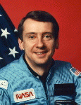

Lyndon B. Johnson Space Center
Houston, Texas 77058
|
National Aeronautics and Space Administration Lyndon B. Johnson Space Center Houston, Texas 77058 |
 |
Biographical Data |
||
NAME: Charles D. Walker
MDC Payload Specialist
PERSONAL DATA: Born in Bedford, Indiana, August 29, 1948. Married to the former Susan Y. Flowers, of Joplin, Missouri. They have one daughter and one granddaughter. Recreational interests include photography, running, hiking, scuba diving, reading, collecting books on Space, and bonsai. His mother, Donna Lake Walker, resides in Bedford; his father is deceased.
EDUCATION: Graduated from Bedford High School, Bedford, Indiana, in 1966; received a bachelor of science degree in aeronautical and astronautical engineering from Purdue University in 1971.
SPECIAL HONORS: U.S. Patent No. 4,394,246, Electrophoresis Apparatus with Flow Control, issued 19 July 1983; NASA Space Flight Medal (1984, and twice in 1985); Sagamore of the Wabash, State of Indiana (November 1984); Doctor of Science, honoris causa, St. Louis College of Pharmacy (1985); Aerospace Laurels Award, Aviation Week and Space Technology Magazine (1985); Lindbergh Award, American Institute of Aeronautics and Astronautics - St. Louis Section (1986); NASA Group Achievement Award, as consultant to the 1987-88 Space Station Operations Task Force; Engineering Astronaut Alumnus Award, Purdue University Schools of Engineering (September 1989); Kentucky Colonel, Commonwealth of Kentucky (May 1990).
EXPERIENCE: Following graduation from Purdue University he worked as a civil engineering technician, land acquisition specialist and forest firefighter for the U.S. Forest Service. Subsequently he was a design engineer with the Bendix Aerospace Company where he worked on aerodynamic analysis, missile subsystem design, and flight testing. He also was employed as project engineer with the Naval Sea Systems Command with responsibility for computer-controlled manufacturing systems.
Mr. Walker joined the McDonnell Douglas Corporation in 1977 as a test engineer on the Aft Propulsion Subsystem for the Space Shuttle orbiters. He joined the Space Manufacturing (later named Electrophoresis Operations in Space, EOS) team as one of its original members. He shares in a patent for the McDonnell Douglas developed continuous flow electrophoresis (CFES) device.
From 1979 to 1986, he was Chief Test Engineer and Payload Specialist for the McDonnell Douglas EOS commercialization project. Mr. Walker led the EOS laboratory test and operations team developing biomedical products. His contributions to the program included engineering planning, design and development, product research, and space flight and evaluation of the CFES device. He was involved with the program support activities at Kennedy Space Center, Florida, and at the Mission Control Center in Houston, Texas. He was responsible for training the NASA astronaut crews in the operation of the CFES payload on STS-4, STS-6, STS-7, and STS-8 shuttle flights during 1982 and 1983. In May 1986, Mr. Walker was appointed Special Assistant to the President of McDonnell Douglas Space Systems Company, working in Washington, D.
Mr. Walker has been an industry member of the NASA Microgravity Material Science Assessment Task Force, the NASA Space Station Office Quick-is Beautiful/Rapid Response Research Study Group, and the NASA Space Station Operations Task Force. He has been a member of the National Research Council's Space Applications Board. Mr. Walker was Faculty Course Advisor and lecturer for the International Space university 1988 summer session. He was a participant in the 1988 Center for Strategic and International Studies civil Space policy study. He served on the AIAA steering committee formulating the strategic plan for NASA's office of Commercial Programs. Mr. Walkers has served as a board member of the Astronauts Memorial Foundation. He was the organizing committee chairman for the 1992 World Space Congress. He has been a national panel member of the NASA/Industry Manned Flight Awareness Program and the NASA/Industry Education Initiative. Mr. Walker advised the NASA/Purdue University space life support research center, a NASA/Penn State space commercial development center and a U.S. Department of Education/Ohio State University science education center. He is a board director of the Challenger Center for Space Science Education. Mr. Walker has served as the volunteer chairman of the board of directors of Spacecause, and is past president and a current board director of the National Space Society. He is also currently a board director of the Association of Space Explorers. Walker is a professional engineer registered in California. He has authored several papers and book contributions on the EOS electrophoresis program, space development, commercialization, and space history. Mr. Walker has also written columns and articles appearing in national newspapers and numerous other publications.
NASA EXPERIENCE: While never an employee of NASA, he has been extensively involved in payload preparation and on-pad processing support activities at Kennedy Space Center, Florida, and in flight support at the Mission Control Center, Houston, Texas. He was responsible for training the NASA astronaut crews in the operation of the CFES payload on STS-4, STS-6, STS-7, and STS-8 shuttle flights during 1982 and 1983. Confirmed by NASA in 1983 as the first industrial payload specialist, Mr. Walker accompanied the McDonnell Douglas CFES equipment as a crew member on Space Shuttle missions 41-D, 51-D, and 61-B, accumulating 20 days of experience in space and traveling 8.2 million miles. Aboard these Space Shuttle missions Mr. Walker also performed early protein crystal growth experiments and participated as a test subject in numerous medical studies. Since 1986 Mr. Walker has served in various NASA study and review team capacities including as a member of the NASA Microgravity Material Science Assessment Task Force, the NASA Space Station Office Quick-is-Beautiful/Rapid Response Research Study Group, and the NASA Space Station Operations Task Force. He has served on the national panels of the NASA/Industry Manned Flight Awareness Program and the NASA/Industry Education Initiative.
CURRENTLY: Mr. Walker is Senior Manager of Space Programs Business Development and Marketing with The Boeing Company Washington D.C. Operations.
FEBRUARY 1999
This is the latest revision available through NASA. Further updates should be requested from the above named individual
{kind=link}